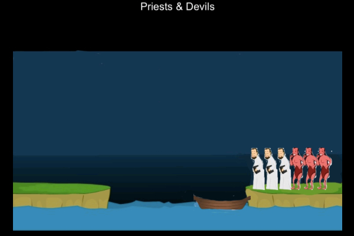

2011–至今 中山大学, 软件学院, 软件工程, 计算机应用软件方向. GPA: 3.6/5.0.
品课志 Picourse 为一个面向企业 HR 的应用, 提供各种企业内部培训课程的分类浏览, 课程详细介绍以及讲师介绍等信息, 帮助企业 HR 找到适合自己员工的课程.
CoFunder 为国内一个类似 Kickstarter, 点名时间的众筹类网站的 iOS 客户端. 用户可 以使用此应用浏览各种创意项目, 并进行投资.
牧师与魔鬼 Priests and Devils 是一个基于 Cocos2d-x 引擎的 iOS 小游戏. 游戏的目标是 让玩家帮助牧师和魔鬼渡河, 并保证牧师不会被魔鬼吃掉.
